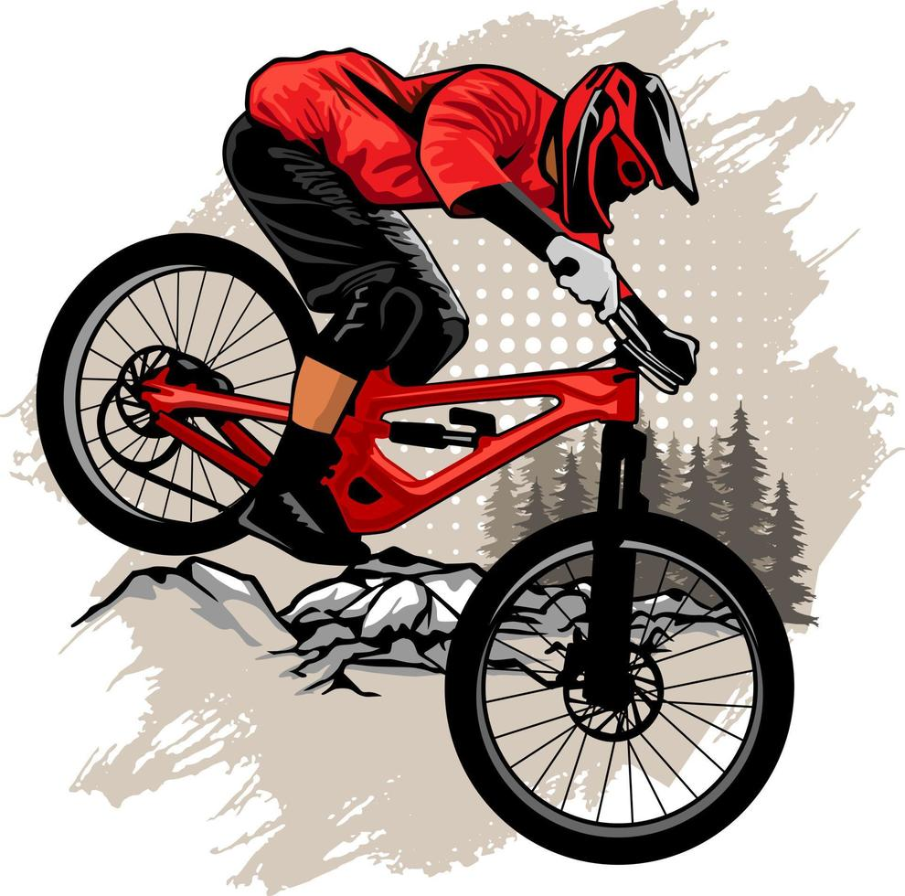

En Rueda Libre, ofrecemos tarifas competitivas para el alquiler de bicicletas en Medellín
| Tipo de bicicleta | Tarifa por hora | Tarifa por medio dia (4 h) | Tarifa por Dia completo |
|---|---|---|---|
| Bicicleta Urbana | $10.000 | $30.000 | $50.000 |
| Bicicleta de montaña | $15.000 | $45.000 | $70.000 |
| Bicicleta eléctrica | $25.000 | $70.000 | $110.000 |
Nota: Recerda traer tu Documento de Identidad para poder alquilar una bicicleta.
| Recorrido | Distancia | Duración | Nivel | Precio por persona |
|---|---|---|---|---|
| Rios y parques | 12 km | 2 horas | Fácil | $45.000 |
| Sabores de Barrio | 18 km | 3 horas | Medio | $60.000 |
| Reto las Palmas | 25 km | 4 horas | Dificil | $85.000 |
Nota: Los recorridos guiados están sujetos a disponibilidad y requieren reserva previa.
